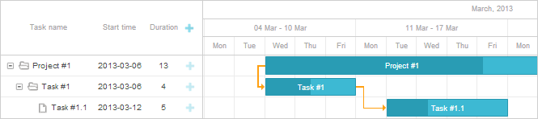

Available only in PRO Edition
This functionality is available only in PRO edition
The library provides the possibility to hide unnecessary time units in the time scale of the chart. You can use this possibility, for example, to display only working days and hide weekends.
Generally, to hide a time unit in the time scale you need to use the ignore_time method. The method is a function that takes the cell's date as a parameter. To hide a unit - return true for it.
For example, to hide weekends from the scale, use the method as in:
// 0 refers to Sunday, 6 - to Saturday
gantt.ignore_time = function(date){
if(date.getDay() == 0 || date.getDay() == 6)
return true;
};

Related sample: Not render weekends on the scale
Note, hiding time units from the scale doesn't exclude these units from calculation of the tasks duration. To exclude hidden units from duration's calculation, use the technique described in the article Work Time Calculation
Note that while using work time calculations, you can use isWorkTime instead of hardcoded values:
gantt.ignore_time = function(date){
if(!gantt.isWorkTime(date))
return true;
};
Related sample: Calculate working hours
Back to top